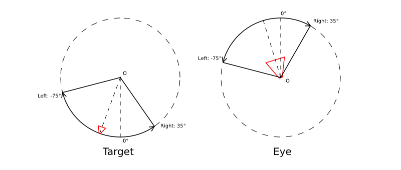
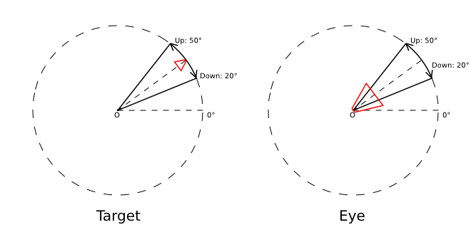
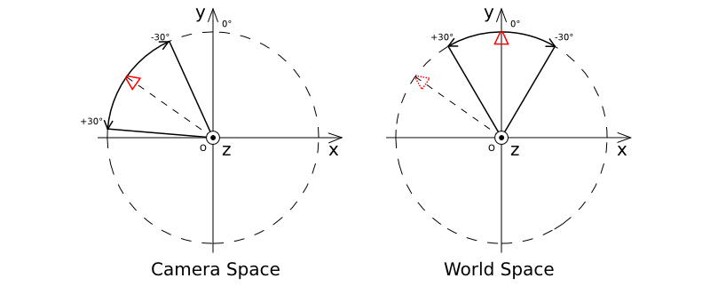

Объекты¶
Объекты служат целям размещения компонентов различного типа (мешей, камер, ламп и т.д.) в пространстве 3D сцены.
Типы¶
Движком поддерживаются объекты следующих типов:
- меш (mesh)
- камера (camera)
- лампа (lamp)
- пустой (empty)
- скелет (armature)
- источник звука (speaker)
- кривая (curve)
Статические и динамические объекты¶
Все объекты типа MESH можно разделить на статические и динамические.
Статические объекты - объекты, меши которых могут быть объединены друг с другом, если они имеют одинаковый материал.
Динамические объекты - объекты, меши которых не могут быть скомбинированы друг с другом.
Объединение статических объектов - т.н. батчинг (batching) - осуществляется автоматически при загрузке сцены в целях оптимизации количества вызовов отрисовки. Конвертация происходит, даже если на сцене присутствует всего один объект. Центр получившегося в результате конвертации меша находится в начале координат.
Среди объектов другого типа динамическими являются CAMERA и ARMATURE. Остальные - статические.
Объекты, имеющие анимацию, физику или родителя, являющегося динамическим объектом, рассматриваются как динамические.
Перемещение посредством API возможно только в случае динамических объектов. Чтобы обеспечить движение объекта, не имеющего настроек динамического объекта, в его настройках следует активировать опцию Blend4Web > Do not batch.
Настройка¶
Для объектов всех типов поддерживаются расположение в пространстве, указатель на блок данных, родительский объект, принадлежность к группе и ряд свойств, специфичных для Blend4Web.
Вкладка Object¶

- Transform > Location
- Координаты местоположения.
- Transform > Rotation
- Углы вращения. При повороте объекта доступны все режимы Rotation Mode, но при создании объектной анимации поддерживаются только Quaternion (WXYZ) и XYZ Euler.
- Transform > Scale
- Масштабирование. Все 3 компоненты (x, y, z) должны быть одинаковы. Для физических объектов масштабирование не поддерживается.
- Relations > Parent
- Указатель на родительский объект.
- Groups
- Группы объектов, которым принадлежит данный объект.

- Blend4Web > Do not export
- Не экспортировать.
- Blend4Web > Apply scale
- Применить масштабирование объекта при экспорте. Также применяет модификаторы.
- Blend4Web > Apply modifiers
- Применить модификаторы объекта при экспорте. При наличии модификатора SKIN рекомендуется применить его перед экспортом, т.к. он сбрасывает слои вертексных цветов и UV-текстур, что может привести к ошибкам экспорта.
- Blend4Web > Export vertex animation
- Экспортировать предварительно созданную и сохраненную вертексную анимацию.
- Blend4Web > Export edited normals
- Экспортировать предварительно отредактированные и сохраненные нормали.
- Blend4Web > Animation > Use default
- Начать воспроизведение в движке связанной с объектом анимации.
- Blend4Web > Animation > Animation blending
- Только для арматурных объектов. Разрешить плавный переход от одной скелетной анимации к другой.
- Blend4Web > Animation > Behavior
- Поведение анимации при достижении последнего кадра: Finish stop - остановить, Finish reset - остановить и сбросить в нулевой кадр, Cyclic - циклически повторять.
- Blend4Web > Do not batch
- Принудительно сделать объект динамическим.
- Blend4Web > Dynamic Geometry
- Разрешить изменение геометрии объекта через API Blend4Web.
- Blend4Web > Disable frustum culling
- Отключить оптимизацию отсечением по зоне видимости.
- Blend4Web > Disable fogging
- Отключить туман для объекта.
- Blend4Web > Do not render
- Отключить рендеринг объекта (например, вспомогательный объект физики).
- Blend4Web > Shadows: Cast
- Объект будет отбрасывать тени.
- Blend4Web > Shadows: Cast only
- Объект будет отбрасывать тени, при этом сам будет оставаться невидимым. Становится доступным после включения Blend4Web > Shadows: Cast.
- Blend4Web > Shadows: Receive
- Разрешить затенение от прилегающих объектов (получение теней) на объекте.
- Blend4Web > Reflections: Reflexible
- При включении объект будет отражаться от зеркальных поверхностей.
- Blend4Web > Reflections: Reflexible only
- При включении объект будет отражаться, при этом сам будет оставаться невидимым. Становится доступным после включения Blend4Web > Reflections: Reflexible.
- Blend4Web > Reflections: Reflective
- При включении объект будет отражать своей поверхностью другие объекты.
- Blend4Web > Reflections: Reflection plane
- Текстовое поле для названия пустого объекта, задающего плоскость отражения. Становится доступным после включения Blend4Web > Reflections: Reflective.
- Blend4Web > Caustics
- На объекте будут видны эффекты от прилегающей к нему воды (каустика).
- Blend4Web > Wind bending
- Включить процедурную анимацию под действием ветра.
- Blend4Web > Selectable
- Разрешить выделение объекта с помощью мыши или другого устройства ввода, а также его подсвечивание (эффект Glow).
- Blend4Web > Billboard
- Использовать объект в качестве билборда (т.е. автоматически ориентировать его относительно камеры).
- Blend4Web > Billboarding geometry
- Способ ориентирования билборда. Spherical (по умолчанию) - объект всегда ориентирован к камере одной стороной независимо от угла обзора, Cylindrical - аналогично Spherical, только вращение ограничено осью Z мирового пространства в Blender. Становится доступным после включения Blend4Web > Billboard.
- Blend4Web > LOD transition ratio
- Параметр для сглаживания переключения между LOD объектами. Определяет, на каком дополнительном расстоянии LOD объекты будут видны до замены последующими LOD объектами. Назначается для главного объекта. Измеряется в долях от радиуса охватывающей сферы объекта.
- Blend4Web > Self LOD > Distance
Расстояние от камеры, на котором объект перестает отображаться.
Не рекомендуется, начиная с версии 14.06: реализовано в стандартном инструменте Blender Levels of Detail.
- Blend4Web > Additional LOD objects
Интерфейс добавления низкополигональных объектов для реализации переключения уровня детализации.
Не рекомендуется, начиная с версии 14.06: реализовано в стандартном инструменте Blender Levels of Detail.
Вкладка Physics (в режиме Blender Game)¶

- Blend4Web > Detect collisions
- Активировать связанную с объектом физику.
- Blend4Web > Floating
- Сделать объект плавучим. Подробное описание настроек плавучих объектов можно найти в разделе физика.
- Blend4Web > Vehicle
- Активировать использование объекта в качестве составной части транспортного средства. Подробное описание настроек транспортных средств можно найти в разделе физика.
- Blend4Web > Character
- Активировать использование объекта в качестве физического каркаса игрового персонажа. Подробное описание настроек персонажа можно найти в разделе физика.
Камера¶
Настройки камеры выставляются в панели Properties на вкладке Object Data.

Blend4Web > Move style – режим управления камерой. По умолчанию камера находится в статическом режиме (Static), допуская измененение своего положения только через API. В режиме Target камера вращается вокруг некоторой точки, положение которой может быть изменено (см. панорамирование). Режим Eye позволяет осуществлять вращение и перемещение от первого лица. В режиме Hover камера движется параллельно горизонтальной плоскости.
Blend4Web > Target location – доступно в режиме Target. Позиция точки, относительно которой будет вращаться камера. Кнопка Copy Cursor Location позволяет скопировать текущее положение курсора.
Blend4Web > DOF front distance – описано в разделе Постпроцессинговые эффекты
Blend4Web > DOF rear distance – описано в разделе Постпроцессинговые эффекты
Blend4Web > DOF power – описано в разделе Постпроцессинговые эффекты
Ограничения движения камеры¶
Для камеры доступно несколько настроек, ограничивающих её движение тем или иным образом. Они объединены в группу Camera limits.

Виды ограничений
Blend4Web > Use distance limits – доступно в режимах Target и Hover. Для камеры типа Target параметры задают минимальное и максимальное расстояния от камеры до точки вращения.
Варианты интервалов для камеры типа Target:
- Max > Min - расстояние от камеры до объекта ограничено интервалом [Min, Max]
- Max = Min - фиксирование камеры на определенной высоте над объектом
- Max < Min - ограничение движения отсутствует
{kind=link}
Значения по умолчанию: Min = 1, Max = 100.
Для камеры типа Hover параметры задают минимальное и максимальное расстояния от камеры до точки пересечения (опорная точка) направления взгляда камеры с горизонтальной плоскостью (по умолчанию с плоскостью OXY мировых координат в Blender’е).
Варианты интервалов для камеры типа Hover:
- Max > Min - расстояние от камеры до опорной точки ограничено интервалом [Min, Max].
- Max = Min - фиксирование камеры на определенном расстоянии до опорной точки.
- Max < Min - камера свободно движется вдоль оси OZ мировых координат в Blender’е, опорная точка не задана.
Значения по умолчанию: Min = 1, Max = 100.
Blend4Web > Use horizontal translation limits – доступно в режиме Hover. Ограничение перемещения опорной точки по оси OX в мировых координатах в Blender’е.
Варианты интервалов:
- Max > Min - ограничение перемещения опорной точки интервалом [Min, Max].
- Max = Min - фиксированное положение опорной точки.
- Max < Min - отсутствие ограничений.
Значения по умолчанию: Min = -100, Max = 100.
Blend4Web > Use vertical translation limits – доступно в режиме Hover. Ограничение перемещения опорной точки по оси OY в мировых координатах в Blender’е.
Варианты интервалов:
- Max > Min - ограничение перемещения опорной точки интервалом [Min, Max].
- Max = Min - фиксированное положение опорной точки.
- Max < Min - отсутствие ограничений.
Значения по умолчанию: Min = -100, Max = 100.
Blend4Web > Camera angle limits – доступно в режиме Hover при включенной опции Blend4Web > Use distance limits. Ограничение угла наклона камеры (угла между направлением взгляда камеры и горизонтальной плоскостью).
Варианты интервалов:
- Max > Min - ограничение поворота камеры интервалом [Min, Max].
- Max = Min - наклон камеры зафиксирован, расстояние от камеры до опорной точки равно значению Min поля Blend4Web > Use distance limits.
- Max < Min - отключение опции Blend4Web > Use distance limits.
Допустимые значения: 0 \(\le\) Min, Max \(\le\) 90.
Значения по умолчанию: Min = 0, Max = 90.
Blend4Web > Use panning mode – доступно в режиме Target. Разрешить панорамное перемещение камеры.
Blend4Web > Use horizontal rotation – доступно в режиме Hover при включенной опции Blend4Web > Use distance limits. Разрешить вращение камеры в горизонтальной плоскости относительно опорной точки.
Blend4Web > Use horizontal rotation clamping – доступно в режимах Target и Eye. Ограничение горизонтального вращения камеры относительно точки вращения (в режиме Target) или относительно своего местоположения (в режиме Eye).
Направление от Left к Right считается положительным и для режима Target совпадает с направлением против часовой стрелки, а для режима Eye - по часовой стрелке:
{kind=link}
Значения по умолчанию: Left = -180, Right = 180.
Blend4Web > Use vertical rotation clamping – доступно в режимах Target и Eye. Ограничение вертикального вращения камеры относительно фиксированной точки (в режиме Target) или относительно своего местоположения (в режиме Eye).
Направление от Down к Up считается положительным:
{kind=link}
Если включена опция Use horizontal rotation clamping, то вертикальное вращение будет ограничено, по крайней мере, интервалом [-90, 90].
Значения по умолчанию: Down = -90, Up = 90.
Особенности значений, ограничивающих поворот
- Перемена мест значений Left/Right или Down/Up приводит к движению по противоположной дуге окружности вращения.

- Left = Right, Up = Down - фиксирование камеры соответственно по горизонтали или вертикали.
Отсчет углов поворота
При ограничении горизонтального и вертикального вращения можно выбрать пространство координат:
- Camera space - все углы отсчитываются относительно начального положения и ориентации камеры.
- World space - горизонтальные углы отсчитываются относительно направления оси Y в пространстве мировых координат, вертикальные - относительно горизонтальной плоскости XOY в мировом пространстве.
Для ограничения по горизонтали:
{kind=link}
Для ограничения по вертикали:

Оси координат, отмеченные на рисунках, совпадают с осями мировых координат в Blender’е.
По умолчанию назначается вариант Camera space.